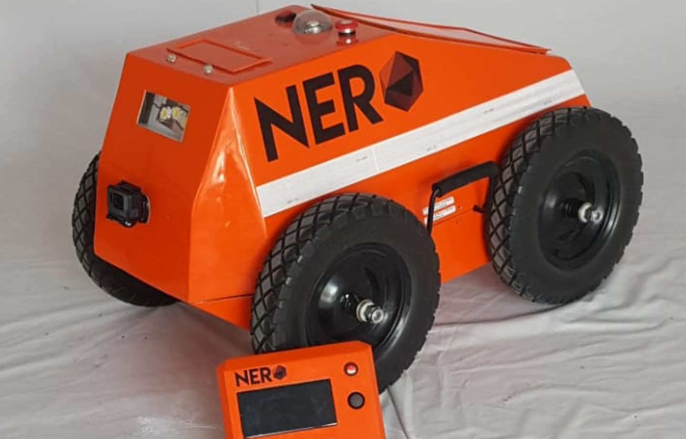

NERO
Separador

NERO is a remote-controlled vehicle that travels in coal mines
to sense the concentration of gases and send information to the
operators outside the analyzed tunnel; in turn NERO dispenses Cal to
reduce the concentration of gases and allow work in safe and
adequate conditions for miners.